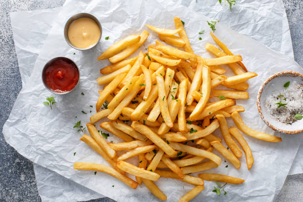

Fries:

These crispy air fryer sweet potato fries take only 10 minutes to cook. They are simple to make and delicious. I bet you can't eat just one!
Recipe:
- 1 medium sweet potato, peeled
- 1 tablespoon canola oil
- 1/2 teaspoon kosher salt
- 1/4 teaspoon pepper
- 1/8 teaspoon garlic powder
- 1/8 teaspoon ground sweet paprika
Steps:
- Preheat the air fryer to 400 degrees F (200 degrees C).
- Cut sweet potato into 1/2-inch wide fries. Place in a bowl with canola oil; toss to coat. Season with salt, pepper, garlic powder, and paprika; mix until all fries are evenly coated.
- Working in batches if necessary, place an even layer of fries in the air fryer basket.
- Cook in the preheated air fryer until golden, about 10 minutes. Repeat to cook remaining fries.
- Serve hot and enjoy!
Home